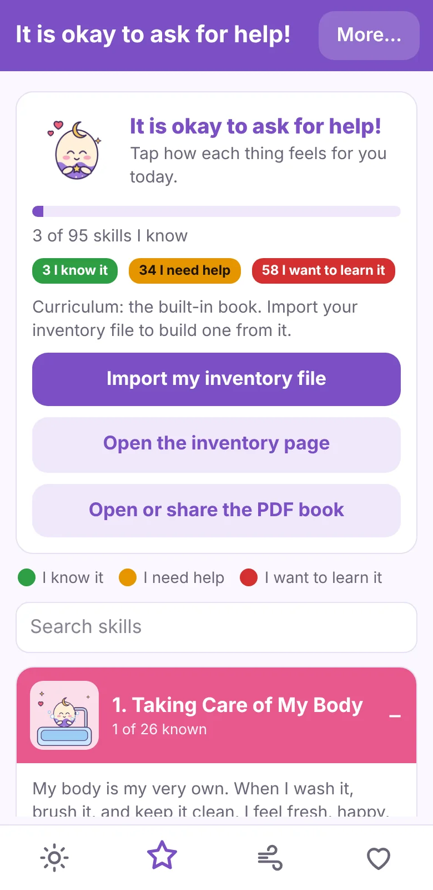
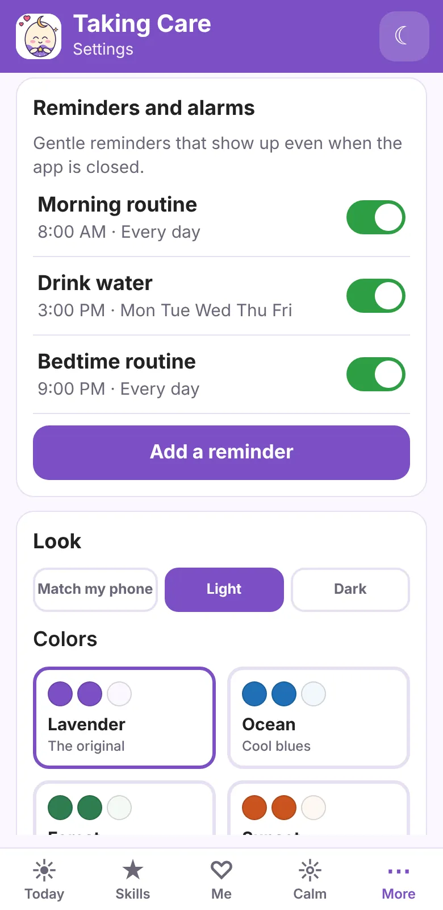
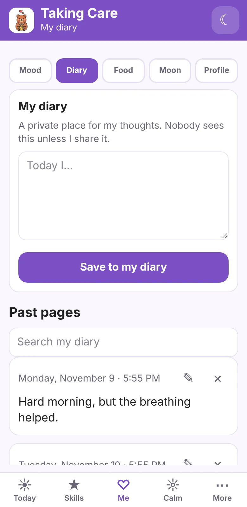
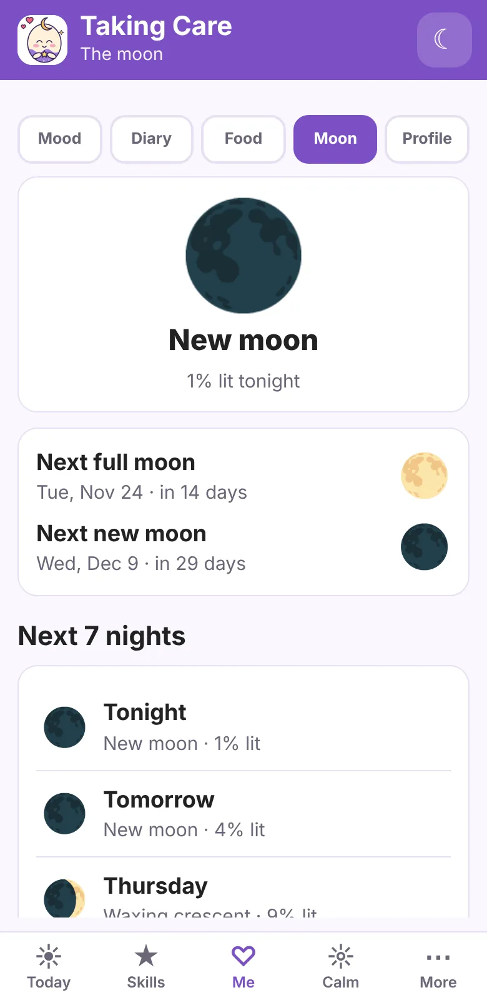
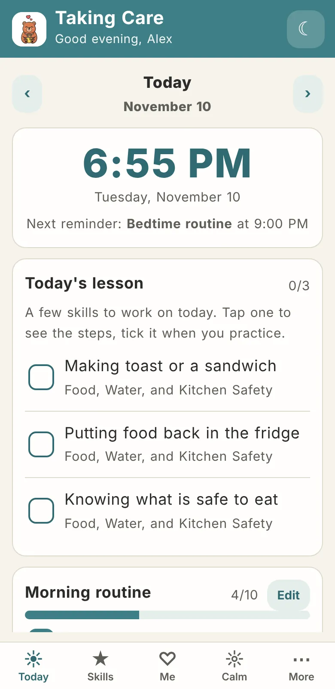
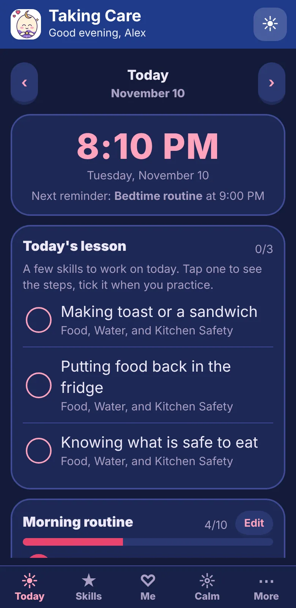
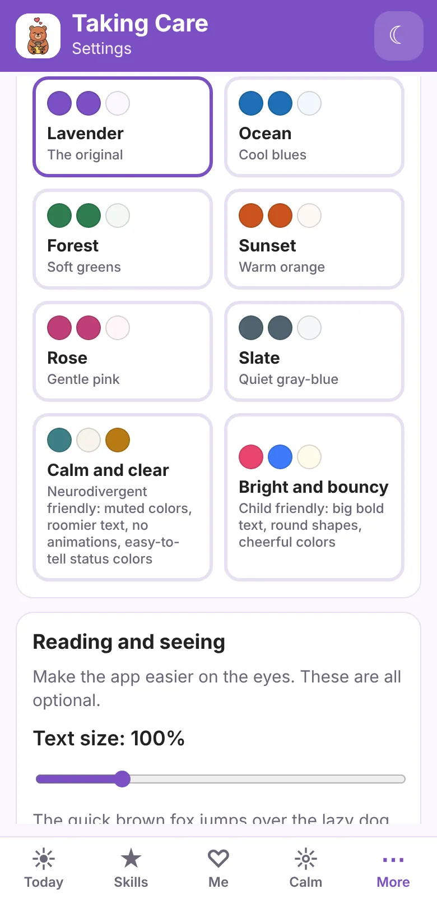

It is okay to ask for help.
Every skill in the app gets three honest answers. Green means you know it. Yellow means you need help. Red means you want to learn it. There is no wrong one.
Tap a few to see what happens.
Start from your own checklist
You do not need the checklist to begin. The whole book of 95 skills is already inside the app. But if you fill it in, the app builds your lessons from your answers.
Fill in the checklist
Open the checklist page and tap green, yellow, or red for each thing. Add anything we missed.
Save your list
Press "Done! Save my list." Your phone saves a small text file.
Open it in the app
In Taking Care, go to Skills and tap "Import my checklist file." Pick the text file. The app reads it and builds your curriculum.
Get a few lessons a day
Today's lesson picks three skills at a time, starting with the ones you want to learn most. Tap one to see the steps. Tick it when you practice.
What is inside
Everything runs on your phone. Open any screen, and it is yours to change.
Learn, at your own speed
Each skill is a short, kind explanation and a few numbered steps, written the way you would explain it to a five-year-old. No one gets talked down to. Everyone gets a clear next step.
- 95 skills in six sections: body care, clothes and home, food and water, staying safe, big feelings, and talking with people.
- A button on every skill to say how it feels today. The color changes as you grow.
- A printable PDF of the whole book, made inside the app from your own list.

Plan the day, softly
Routines that you can reorder and rewrite, and reminders that you set yourself.
- Morning and bedtime routines. Move steps up or down, rename them, or add your own.
- Repeating reminders for water, meals, medicine time, or anything else, on the days you choose.
- A big, easy clock, a planner for each day, and a water counter.

Notice how you feel
A place to check in with yourself, and tools for when feelings get big.
- Mood check-ins with a 14-day chart.
- A private diary with search, and a food log that asks how your tummy feels.
- Calm tools: slow breathing, a 5-4-3-2-1 grounding game, and a "who can I ask for help?" card with your safe helper's number.

The moon, and your path
A moon calendar built from real phase dates, plus pages for what you love and what you believe.
- Tonight's moon, the next full and new moon, a seven-night forecast, and a month calendar. Dates come from the U.S. Naval Observatory and are saved for offline use.
- A "likes and dislikes" profile for foods, music, sounds, textures, and more. Share it with the people who help you.
- Optional journals for the path you choose: Bible Study, Torah Study, Quran and Dua, a Dharma journal, a Sadhana journal, Gurbani and Simran, a Book of Shadows, a reflection journal, and a spiritual journal. Some show a daily verse from a free source.

Make it fit you
Colors, text, and fonts that change to suit your eyes and your brain.
- Light and dark, and eight color themes. "Calm and clear" is quiet and roomy, with no animations. "Bright and bouncy" is big, round, and cheerful.
- A text size slider, an easy-to-read font, a dyslexia-friendly font, and extra letter spacing.
- Color-blind modes. They swap the status colors and add a star, triangle, or check mark, so color is never the only clue.



Download Taking Care
Version 1.0 for Android 7 or newer. 5.6 MB. Free.
SHA-256 of the file, so you can check it arrived whole:147c92f1b57dc9e17ee7dab5e5f6f224dbbba58f7450f99b1f7793a53b9a078e
It is not on Google Play yet. On iPhone, Windows, Mac, or Linux, use the web app below.
Or use it in your browser
The same app runs in any modern browser. Install it from the browser menu so it opens in its own window and works offline.
On the web, reminders only show while the app is open, and your data stays in that browser. The Android app keeps reminders working any time. You can move your data between them with Export and Restore.
To install it
- Download the file on your Android phone.
- Open it. If Android asks, allow your browser or Files app to "install unknown apps." You can turn that off again afterward.
- Tap Install. Android may warn that the app is not from the Play Store. That is expected for now.
To update it
Install the new file over the old one. Do not uninstall first, or your saved data goes with it.
To move to a new phone
On the old phone, open More and tap "Export all my data." On the new phone, install the app, open More, and tap "Restore from a file."
Your things stay yours
There are no accounts, no ads, and no tracking. Your diary, moods, and notes live only on your phone and leave only when you choose to share or export them. Read the privacy page for the details, including the few times the app goes online.
Taking Care is a learning and journaling tool. It is not medical care or therapy. If you are in danger or thinking about hurting yourself, call or text 988 in the United States, or call your local emergency number.